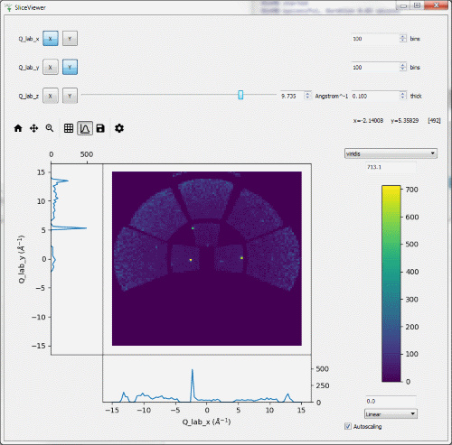

We are proud to announce version 4.1 of Mantid.
We have made significant improvements to support within the Mantid workbench for a number of techniques, adding several technique specific user interfaces ported over from Mantidplot. It also includes a fresh new implementation of the sliceviewer that merges in a lot of the popular functionality of the spectrum viewer into one capable tool. This version also introduces the new muon interface that is the result of a long effort to rebuild the interface using modern design and engineering standards, resulting in a much more stable, extensible interface, but also just so much better to use.
This is just a few of many improvements in this release, so please take a look at the release notes, which are filled with details of the important changes and improvements in many areas. The development team has put a great effort into making all of these improvements within Mantid, and we would like to thank all of our beta testers for their time and effort helping us to make this another reliable version of Mantid.
Throughout the Mantid project we put a lot of effort into ensuring Mantid is a robust and reliable product. Thank you to everyone that has reported any issues to us. Please keep on reporting any problems you have, or crashes that occur to the Mantid Forum.
Installation packages can be found on our download page which now links to sourceforge to mirror our download files around the world, you can also access the source code on GitHub.
Details of what is available is the release are in the release notes http://docs.mantidproject.org/nightly/release/v4.1.0/index.html
Future OS Support Changes:
- Due to support ending for Windows 7 and 8 this is the last release to support Windows 7 or 8. Releases following this may continue to work for these releases, but will not have been verified or tested by the development team on anything earlier than Windows 10.
- This is the final release that will support Ubuntu 16.04.
-
This is the final release that will support OSX Yosemite, OSX El Capitan and macOS Sierra.
